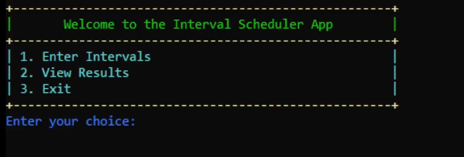

Interval Scheduler

Problem
Scheduling overlapping intervals (e.g., rooms, resources) requires computing the minimum number of resources needed. Doing this manually is hard and error-prone.
Approach
- OOP model: Interval (time range) and Scheduler (allocations).
- Greedy interval partitioning to minimize rooms/resources.
- Sorted by start time; efficient room-availability checks.
- Menu-driven CLI for input, validation, and results.
- Enhanced readability with colored text and ASCII UI (Windows Console).
- Robust error handling and input validation.
Results / Impact
- Fast computation of the minimum number of rooms required.
- Clear, interactive CLI improved usability.
- Demonstrates practical use of greedy algorithms in scheduling.
Stack
C++ (MinGW), Windows Console API